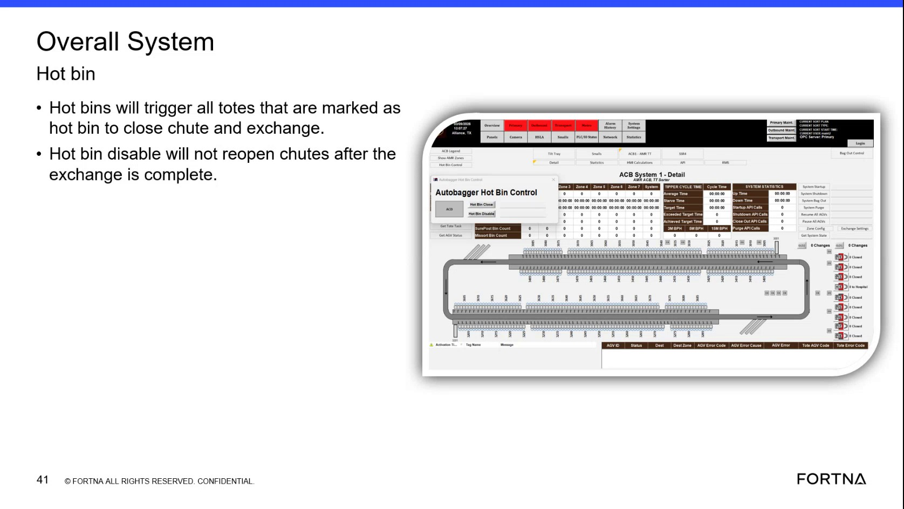

| Procedure ID | proc_verify_hot_bin_disable_leaves_chutes_closed_after_exchange_v1 |
|---|---|
| Title | Verify Hot Bin Disable Leaves Chutes Closed After Exchange |
| Procedure Type | reference |
| Primary Role | operator |
| Support Safe | Yes |
| Validation Status | needs_sme_review |
| Merge Status | source_finalized |
Use the training source to verify the documented behavior that hot bin disable does not reopen chutes after the exchange is complete.
Use when reviewing or confirming expected chute behavior for a hot bin disable condition after an exchange has completed.
Responsible role: operator
Instruction:
Identify that the condition being reviewed is hot bin disable, using the source terminology.
Expected result:
The operator confirms the review is for a hot bin disable condition.
Screens / Images:

Stop or Escalate If:
Responsible role: operator
Instruction:
Verify that an exchange has completed for the affected tote or chute handling sequence.
Expected result:
The operator confirms the exchange is complete before checking whether the chute reopened.
Screens / Images:
Stop or Escalate If:
Responsible role: operator
Instruction:
Check the chute state after exchange completion against the source statement that hot bin disable will not reopen chutes after the exchange is complete.
Expected result:
The chute remains closed after exchange completion when hot bin disable behavior applies.
Screens / Images:
Stop or Escalate If:
Responsible role: operator
Instruction:
Record whether the chute remains closed in accordance with the documented behavior.
Expected result:
A verification result is recorded as matching or not matching the documented behavior.
Stop or Escalate If: